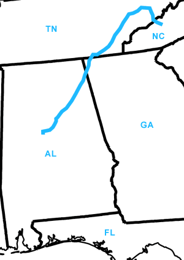

Day Eight
Smokepoint Great Smokey Mountains National Park, NC - McCalla,
AL
Date: 06/18/2002
Distance: 424 miles
Weather: Mostly sunny. Low 90's
Woke up in the Great Smokey Mountains, and drove a twisty road to the highest point. On the way out of the park we went through Gatlinsberg, TN which was both alarming and unsettling.
Route 75. For a long drive through TN (no stopping here, not even at the Chatanotchee Choo Choo!).
A sign from the highway in Alabama read Tannehill Historical Park, so we took a gamble looking for campsites. ShooEeee! We found the nicest spot with bathrooms, a deserted campground, a pool we couldn't find, and a sweet shop. The Tannehill Historical Park is a living historical site where you can watch blacksmiths and quilters at work.